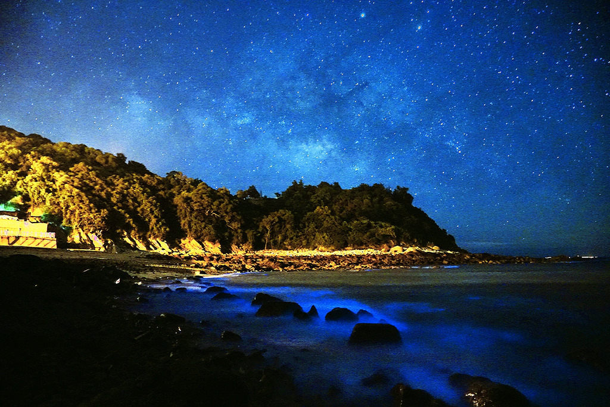

馬祖藍眼淚
Matsu Sea of Stars
地址： 馬祖南竿、北竿、莒光及東引島，各沃(澳)口均有可能觀賞
藍眼淚或藍海現象甚至是藍色啤酒海這些名詞都是指向一種夜光蟲(渦鞭毛藻)，經過海浪及自然風的驚擾會發出淡藍色的螢光，而數量一多就會滿滿地在海上，馬祖舊時稱之為「丁香水」，相傳看到這種生物大量出現，以它為食物的丁香魚群就會過來。
藍眼淚主要出現在每年的3-9月，而4-6月又是最多的時候。要看藍眼淚，必須在無光害的環境，儘量避免農曆月圓前後，月光影響最鉅之時觀看。另外，經由波浪的擾動，夜光蟲才會出現光芒形成藍眼淚，所以還要算準在開始滿潮之間前往，於南竿北海坑道內觀看藍眼淚較不受以上因素影響。
更多介紹：